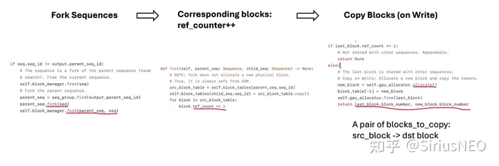
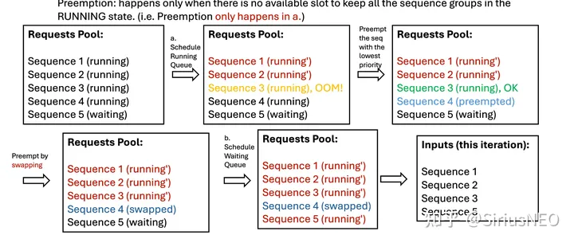

vLLM 是来自 UC Berkeley 的 LMSYS 在 LLM 推理方面的最新工作（没错就是搞出 Vicuna 的那个 group），最大亮点是采用 Paged Attention 技术，结合 Continuous Batching，极大地优化了 realtime 场景下的 LLM serving 的 throughput 与内存使用。
vLLM 官方撰写了一篇 BLOG，但是 Paper 还是 Stay Tuned 状态。不过好在他们已经开源了代码实现，因此我们可以据此窥探一些技术细节。在 example 中我们的单卡 inference 可以简单的这样完成
1 | prompts = [ |
其中 SamplingParams 是对 sampling 过程中要用到的参数的封装，它的作用类似 dataclass，后续 sampling（greedy/beam search）时候用到。下面我们来对这个简单的推理过程按照 vLLM 整个项目的组成元件进行分析。
总体架构如图所示：

1. LLM and LLM Engine
LLM 是对 LLM serving 部分的封装，也是核心部分。首先它会初始化这个类。初始化过程中大部分参数都会被用来构造 EngineArgs，这是一个 dataclass，封装了 Engine 的初始化参数。然后构建 LLM Engine。一个 LLM 只有一个 LLM Engine，所以它就是对 Engine 再包一层。不过按照作者的这个设计意思，LLM Engine 也可以单提出来使用。
初始化 LLM Engine 时候会先调用 create_engine_configs 将 EngineArgs 分解成 ModelConfig，CacheConfig， ParallelConfig 和 SchedulerConfig。其中
ModelConfig包括了对 model 和 tokenizer 的定义，dtype 和随机数 seed 以及是否用 pretrained weights 还是 dummy weights 等。CacheConfig包括 block_size（每个 block 多大）， gpu_utilization（GPU 利用率，后面 allocate 的时候占多少 GPU）和 swap_space（swap 的空间大小）。默认 block_size=16，swap_space=4GiB。ParallelConfig包括了 tensor_parallel_size 和 pipeline_parallel_size，即张量并行和流水线并行的 size，由于我们是单卡，这两个都是 1。SchdulerConfig包括了 max_num_batched_tokens（一个 iteration 最多处理多少个 tokens），max_num_seqs（一个 iteration 最多能处理多少数量的 sequences）以及 max_seq_len（最大生成多长的 context length，也就是一个 sequence 的最长长度，包含 prompt 部分和 generated 部分）。
然后对于每个 device（也即每张卡 / 每个 rank）创建一个 Worker。Worker 是运行 model 的单位。一个 Engine 管理所有的 workers。同时给这个 engine 创建它的 scheduler，以及初始化这个 engine 的 KV cache。
2. Worker
Worker 是对单个 GPU 的抽象。
Engine 通过调用 _run_workers("<method_name>", *args, get_all_outputs, **kwargs) 来在 所有 workers 上执行方法。如果 get_all_outputs 设成 True，那么它会将所有 workers 的返回结果包装成 List 来返回。否则，它只会返回第一个 worker 的结果，并且 assert 所有 workers 的输出都是一样的。在实际执行中主要会调用如下方法（方法名, get_all_outputs=False/True）：
profile_num_avaiable_block，True：通过一次 “试运行” 来 profile peak memory。 每张卡的 blocks 个数可能不同（显存不同），所以需要 get all outputs。由于 vLLM 使用一个中心化的管理单元，因此我们会对 profile 出来的 blocks 个数取 min。init_cache_engine，False：初始化 cache engine。由于返回 None，所以不需要 get all outputs。execute_model，False：执行模型。这里虽然是分布式 inference，但是最后 output 都会被 reduce，所以 get all outputs 也设成 False 就好了。
Worker 初始化阶段会初始化模型和一些 distributed 相关的东西。
3. Cache Engine
用于管理 KV Cache 的单元。
初始化时候，它先根据之前 profile 的数据（cpu/gpu blocks数）来 allocate cache。然后再给 caching 操作初始化一个 CUDA Stream，以及给每一个 layer 初始化一个 cuda event 来用做 stream synchronization。
在 vLLM 里，每个 key block 的 shape 是 num_heads, head_size // x, block_size, x，其中 x 是 16 // dtype 的大小。也就是说 fp32 时 x=4，fp16 时 x=8。每个 value block 的 shape 是 num_heads, head_size, block_size。（为什么 key block 要按 x split？在后面的 kernel 实现里会提到这个加速）
在分配 cpu cache 时候，默认是会用 pin memory 的（除非在 WSL）。
cache engine 里支持了其它两个操作：
- copy。由专门的 cu 函数
copy_blocks支持。 - swap_in 和 swap_out。有点像操作系统里的 swap 概念。in 就是 cpu to gpu，out 就是 gpu to cpu。内部实现由专门的 cu 函数
swap_blocks支持。
下面看相关的 cu 函数，实现在 csrc/cache_kernels.cu 中。
swap_blocks(src, dot, block_mapping)： for 一遍 block_mapping，对于每个 [src, dst] pair（block number to block number）做一个单 block 的 copy。支持 GPU to GPU（必须是同一个 GPU 上），GPU to CPU，CPU to GPU。copy_blocks(key_caches, value_caches, block_mapping)：这里的 mapping 是 int->list[int]，也就是一个 src block idx 对应多个 dst block idx。copy 的过程用一个 global kernel 并行实现。reshape_and_cache(key, value, key_cache, value_cache, slot_mapping)gather_cached_kv(key, value, key_cache, value_cache, slot_mapping)
4. Generate 过程分析
首先调用 llm.generate 接口，我们会传入 List[prompts]（我们也可以在对应位置传入相应的 token ids），然后返回 List[RequestOutput]。对于每个 prompt，它会给 llm engine 生成一个 request。然后调用 run engine。
run engine 的逻辑是：只要有未完成的 requests，就调用 llm engine 的 step 得到这一步的 outputs，然后 append 到返回的 List 里。
step 过程先从 scheduler 获取本次要作为输入的 seq_group_metadata_list ，同时产生一个 scheduler_outputs 和 ignored_seq_groups。然后 engine 会调用 workers 的 execute_model。Generate 过程如图所示。

Sequence 和 SequenceGroup
在分析这部分前，还是要先从 llm engine 的 add request 讲起（每个 prompt 对应一个 request）。在 Sampling 设置中有一个 best_of 参数，它指定了每个 prompt 我们生成多少个 output sequences。在使用 beam search 时候这个参数也作为 beam width。
所以对每个 request，我们就需要构造 best_of 个 Sequence。每个 Sequence 就是对应一个从 prompt 生成出来的完整语句。这些个 Sequence 组成一个 SequenceGroup，也就是从粒度上一个 request 对应一个 seq group。
构造 Sequence 的时候会给这个 Sequence 分配相应的 logical token blocks。一个 logical blocks 对应 block_size 个 token ids。初始化的时候会把 token ids 分段存储在 logical blocks 中，最后一个 block 可能不满。
Scheduler
构造好 seq group 后就会把它添加到 scheduler 的 waiting 队列里。
Scheduler 内部维护了三个队列：waiting，running 和 swapped，分别对应三种 STATE。队列里的元素都是 SequenceGroup。此外，一个 scheduler 还包含一个 BlockSpaceManager，它用来管理 logical blocks 和 physical blocks 之间的映射关系。
然后就是 Scheduler 的关键接口 schedule。现在它只有一个 policy：FCFS（先来先服务）。
- 首先，它会把
runnning队列里的每个 seq group 都弹出来，然后 check 目前的 free blocks 数是否够塞得下。 如果不行，则它会 preempt running 队列中优先级最低的 seq group（如果此时队列里没有其它 seq group，则 preempt 自己）。如果空间够的话，则会对这个 seq group allocate 相应的 physical blocks，然后将其放入 update 后的 running 队列中。经过这个过程，scheduler 在新的内存状态下更新了 running 队列，并把部分任务 preempt 掉。 - 然后 scheduler 会过一遍
swapped队列，尝试 swap in 那些能够 swap 的 seq group，并把它们放到新的 running 队列中。 - 接下来是
waiting队列。在 scheduler 中， SWAPPED 状态严格优先于 WAITING 状态，这是因为我们想 bound 那些 swapped 队列占据的 CPU 内存。这个 scheduler 会尝试将不超过 max_num_seqs 数量的 seq_group 转为 running（包括分配相应的 blocks）。
这些做完会把相应的信息（swap in/out 的 blocks，blocks copy）塞进 scheduler output 里供后面的执行单元实使用。
总结来说，Scheduler 每次调用 schedule 都会把上个时刻的这三个队列往下一个时刻进行一次更新。按照优先级顺序：首先它优先保证 running 队列继续运行，其次它尝试将 swapped 的任务 swap out 回来，如果没有可用的 swapped 队列则会尝试将 waiting 队列中的任务放到 running。 一个 schedule 过程示意图如下：

SequenceGroupMetadata 和 InputMetadata
在_schedule 结束后 scheduler 还会对 schedule 出来的结果进行一次封装，包装成 SequenceGroupMetadata，然后再通过 prepare input 转成 tokens_tensor，position_tensor 和 InputMetadata。
这个转换过程中 Group 这层抽象会被褪开，batch_size 变成 sequence 的个数（一般来说，就是 seq groups 个数 * beam_width）。之后的 num_generation_tokens 和 num_seqs 基本就是相等的了。
Model Execution
在 Scheduler 完之后，就会传给 Worker 进行执行（run_workers: execute_model）。执行模型其实就是正常的 infrence，除了一些 kernel 的实现比较特殊，其他的整个流程和常规流程都是一样的。
值得一提的是这里不仅包括模型的 forward，还包括 cache events 的执行。如果一次执行有输入，那么这些 cache events 会在 Attention 中被执行（也就是用到 cache 之前）。否则，就直接执行，然后返回（因为没有模型输入，不需要跑模型，但还需要执行 cache 操作）。

Sampler
Model 执行后通常得到的输出是 [batch_size, num_hidden] 的，这个东西（称为 hidden states）会被传进 sampler。然后首先经过 lm_head proj 成 [batch_size, vocab_size]。这之中会先经过一些经典的处理手段（presence penalty，frequency penalty，temperature scaling），然后再 log softmax 一下转成 log probs，开始 sample。
sample 这个 for 循环分为两部分：i < num_prompts 的部分（generate next tokens for a prompt）以及 i >= num_prompts 的部分（generate next tokens for generation tokens）。
这里为什么要分 sample_from_prompt 和 sample_from_generation 呢？这是因为 beam search 的开始阶段和后续阶段不太一样。假设我们设定了一个 best_of，然后我们有 n 个 prompt（也即有 n 个 seq group），这样每个 seq group 就有 best_of 个 seqs。我们第一次要做的就是对于每个 seq group，我们从对应分布中取 top best_of 的结果，然后把它们和每个 seq ids 对应；而对于后续的 generation，注意现在每一次下一步都有 best_of * vocab_size 的空间，然后我们要在这个空间再取 best_of 个，所以处理有点不一样。
在这里的处理上，首先它先对 best_of * vocab_size 的空间取 topk。然后我们知道这些 topk 可能有多个来自同一个 parent seq。然后它的策略是，一个 parent id 对应的第一个 output 会放到对应的位置，其它的 output 会被放到某个 discard 的 parent id 对应的位置。注意，这里我们先不在这里 fork，而在 scheduler update 的位置 fork。
SequenceOutputs 和 RequestOutput
经过 Sampler 会得到一个 Dict[int, SequenceOutputs]，也就是 seq id -> 对应的输出，输出包含着 log prob。 这个输出会被传到 scheduler 的 update接口，用于更新对应的 running sequences（即我 auto regression 部分）。然后传到 llm engine 会被包成 RequestOutput 出来。
更新 sequences 这边除了一个简单的 append new token 之外，还包括处理 beam search results 的部分。接着 Sampler 部分，如果 id 不等于 parent id，说明这是一个 fork，因此这个 beam 需要被抛弃，然后做一个对新 sequence 的 fork。这个操作需要 discard 目前的所有数（free 掉所有相关 blocks），然后 copy 目标的那个数据。
5. Some Important Mechanism
到这里整个 inference 的 pipeline 其实已经讲完了。但是有几个设计上的细节还需要提一下，包括 Copy-On-Write 机制，Swap 机制和 Paged Attention 的设计。
Fork & Blocks Copy
上面提到 beam search 的过程中我们需要一个 fork 机制，也就是某个 beam 可能会被 discard，然后完全采用另一个 parent sequence 的数据。Fork 的过程在 Block Manager 里实现就是，child seq 会拷贝 parent seq 的 block table，同时给对应的 block 加上 ref counter。
在给新的 token allocate physical slot 的时候，如果发现之前的 block 是引用，则会在此时 allocate 真正的 block，并且拷贝数据（拷贝是先在 scheduler 里生成 blocks_to_copy 这个信息包，传到 engine 部分由对应的 cuda 核真正执行）。也即常见的 copy on write 的管理方式。
具体过程可以看下图

Preemption: Recompute & Swap
在第一步（保持 running 任务继续运行）时，有可能会出现随着时间增长，队列变长，内存装不下的情况，这时候 vLLM 引入 preemption 机制来解决。如下是一个 schedule 过程中发生 preemption 的情况示例：

vLLM 的 preemption 包含两种机制，一个是 recompute，另一个是 swap。recompute 就是把正在 running 中的seq group 状态设成 waiting，并且直接释放相关的 blocks。Swap 就是把正在 running 中的 seq group 状态设成 swapped，然后对应的 blocks swap 到 CPU 上。
在合适的时候，scheduler 调用 schedule 函数时会尝试把 swapped 状态的 seq group 从 CPU 再 swap in 回来，然后状态设成 running。
如果 CPU 的空间还不够，现在 vLLM 的做法是直接报错。
Paged Attention
在 vLLM 中，第一次（generated by prompts）注意力计算是通过 multi_query_kv_attention 执行，至于为什么叫这个，可能是因为 prompts 可以很长。实现上直接用了 xformers 的实现。算完之后会把 key 和 value 的值 cache 进去（reshape_and_cache）。
在后续的生成（generated by generation tokens）是通过 single_query_kv_attention 实现的，也就是 vLLM 的 Paged Attention。在这之前需要重新 review 一遍 vLLM 的内存管理策略：
- 一个 Sequence 有一系列 tokens，然后维护了若干个 Logical Blocks 来装这些 tokens（其中一个 Logical Block 代表一段长度为 block_size 的连续的 tokens，包含一些 empty slots）。Block Table 是一个从 logical blocks 映射到 physical blocks 的表，由 Block Manager 维护，每个 sequence 都有一张对应的表，实际上差不多就是 0, 1, 2, … -> [physical block ids] 这种。Slot mapping 则是在 prepare input 阶段算出来的每个 token 对应的位置（每个 token 为 1）。
- KV Cache 预先 allocate 好，并且都有 num_blocks 个。
传入的参数 shape 如下：
1 | output: torch.Tensor, # [num_generation_tokens, num_heads, head_size] |
然后来看 kernel 实现。
kernel 的 grid 是 (num_heads, num_seqs) ，block 大小是 (NUM_THREADS,)（这个参数代码里是 128，作者留了一个注释，意思应该是还能被 tune，目前暂时是这么实现。反正是一个简单的线程并行量）。每个 warp 仍然是 32 个 threads。也就是说一个 thread 计算的是一个 head，一个 seq 的部分数据。在 warp 之内还有一层抽象，代码里被称作 thread group，按代码的意思是一个 warp 里对不同块的切分（也就是 warp / block）。所以如果现在我们运行 vLLM 时使用大于 32 的 block size，其实会产生浪费。
1 | WARP_SIZE = 32 (threads) # 通常 GPU 配置 |
这里代码里对 K 和 Q 分别定义了 vec type。注释里说 vec size 的制定规则是让一个 thread group 刚好处理 16bytes 的数据。所以一个 vec type 就有 16 / (thread_group_size * sizeof(scalar_t) 个 scalar_t 类型。
第一步是把 Q load 进来。在一个 thread group 中，每一个 thread 负责 query 的一部分。例如若 group size 是 4，那么 group 的第一个 thread 就负责 Q 矩阵的第 0, 4, 8, … 个 vectors。总之一个 thread group 就把
Load 完 Q 之后就是处理 key 和 QK dot 的部分。这里的 x 和之前在 Python 代码定义的 x 是一个意思（16 / sizeof(scalar_t)。关于这个 x，在 FasterTransformer 的代码里也可以看到有相关注释：
The layout of the cache buffer for the keys is [B, H, Dh/x, L, x] where x == 8 for FP16 and x == 4 for FP32 where the fastest moving dimension (contiguous data) is the rightmost one. The values for x are chosen to create chunks of 16 bytes.
总之就是为了某些 data locality 而设置的排法。QK 的计算最后归结为一句 Qk_dot<scalar_t, THREAD_GROUP_SIZE>::dot(q_vecs, k_vecs)，其中 q_vecs 和 k_vecs 每个都有 NUM_VECS_PER_THREAD 个前面定义的 “vecs” 类型。这个 kernel 调用包含了同一个 thread group 内的 reduction。同时在计算 QK dot 时候也顺便算了 qk_max，为 softmax 做准备。
算完 QK dot 后的 qk_max 只是同一个 thread group 内的 reduction。之后还需要做 warp 内的 reduction（这部分通过原语 __shfl_xor_sync 来完成）以及 warp 之间的 reduction（这部分通过读写 shared memory 完成）。之后采用相似的方式来完成 logits 和 logins @ trans(V) 的计算。
大体来讲，这个 kernel 目前的实现并不算复杂，核心思想其实就是把普通注意力机制中的 sequence length 这一维在内存空间上打散。在实现上，代码中借鉴了 NVIDIA FasterTransformer，但是实测性能并没有 FT 这么好，可能是其他地方还存在一些 overhead，或者这个注意力 kernel 设计的还不够高效。但是不管怎么说，把 KV Cache 打散的操作很大程度上方便了 LLM 运行的内存管理，同时也融合了一些 sparsity 的思想在其中，还是非常好的。